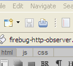

Issue #3742
This test-case is intended for Issue #3742
- cached image requests missing from Net.
Jan Odvarko, odvarko@gmail.com
- Open Firebug and enable the Net panel.
- Do a non-revalidating reload (press ENTER in address bar)
- Notice lack of any IMAGE resources in Firebug Net tab
